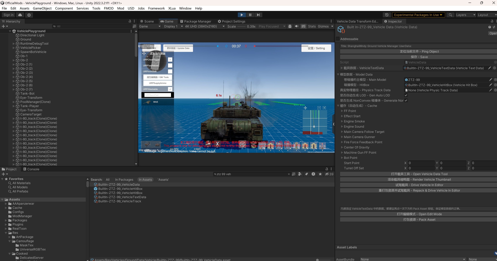
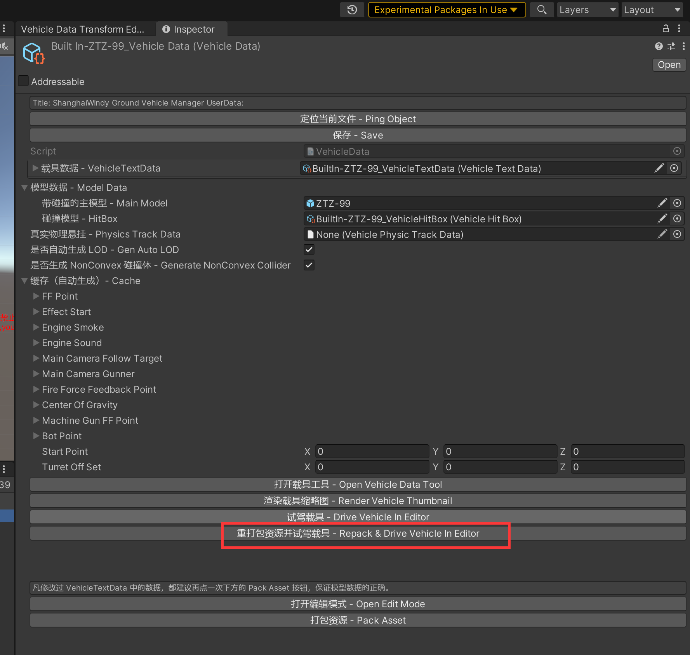
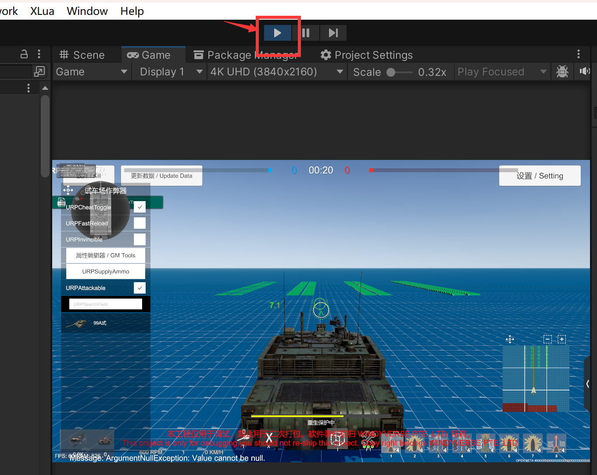
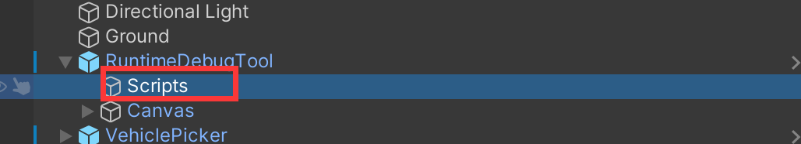
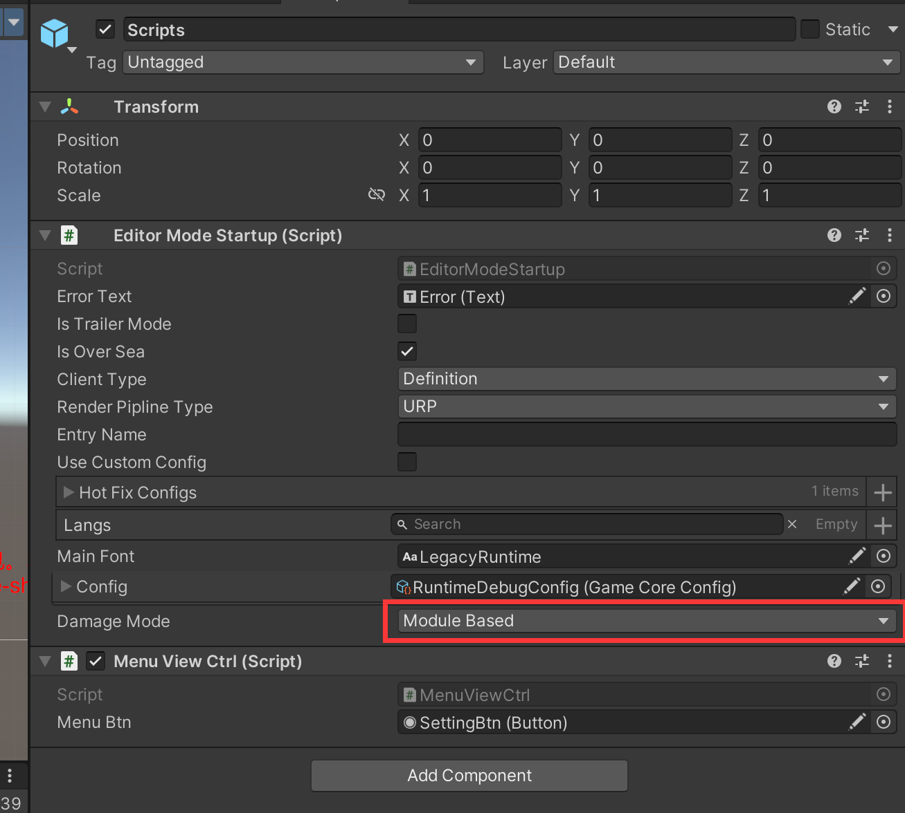

25. Vehicle PlayGround 载具试车场

To simplify mod debugging, you can directly run mods in unity editor.
调试 Mod 一直是一件繁琐的事情，所以为了简化 Mod 开发流程，增加了编辑器内直接加载 Mod 的功能。
Legal Policy 法律合规
本工程仅用于调试，禁止用于二次打包。软件著作权归 WINDYVERSE PTE. LTD. 所有。
This project is only for debugging,you should not re-ship this project. Copy right belongs WINDYVERSE PTE. LTD.
Usage 使用方法

How to quit? 如何退出试车场
Hold Alt key and click play button
按住 Alt，点击 播放按钮

Switch module/hp mode 切换模块/血条模式
We use module mode as default. So if you have not configured it as module vehicle, you can only play it in hp mode.
我们默认使用模块模式，如果你未配置其模块化信息。则只能改为血条模式继续使用。
